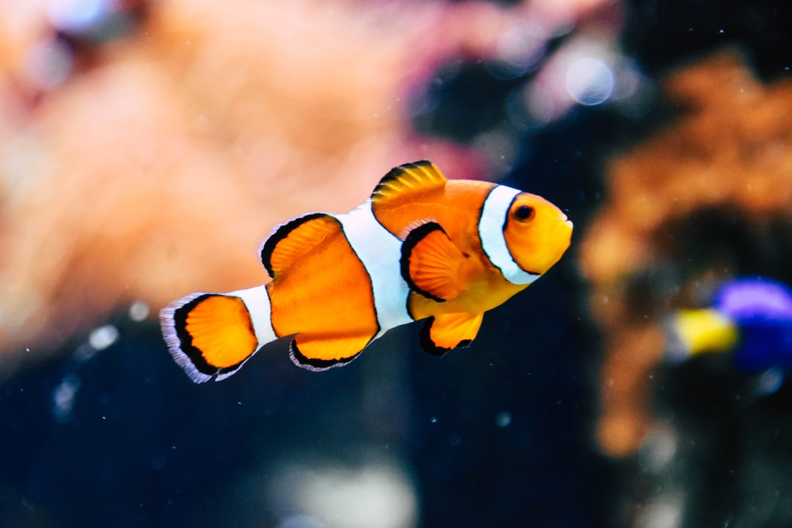
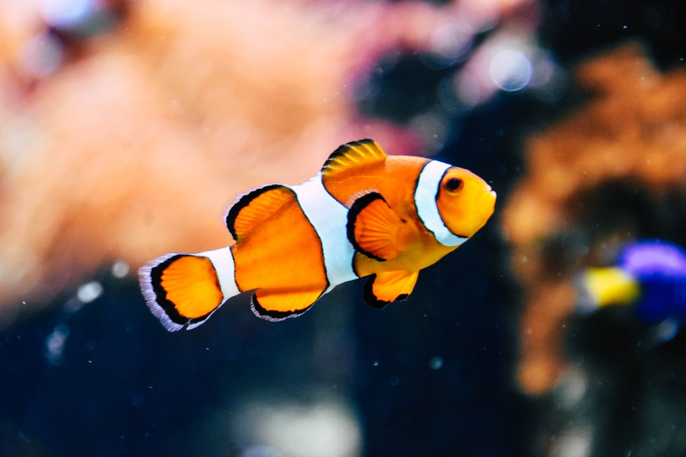

I like cats because I've had them all my life


I like dogs because I used to own one in Brazil, and now in America, my aunt has one

I like cheetahs simply because they're fast and I've always been facinated by things that can go beyond human speed


I like bears because they look friendly, but are huge


I like fishes because they're small and I used to have alot when I was young
 
